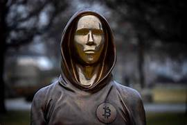

Quem é Satochi nakamoto a pergunta do seculo.
Satoshi Nakamoto (中本哲史 Nakamoto Satoshi) é o pseudônimo utilizado pela pessoa ou pessoas que criaram a moeda virtual Bitcoin. Como parte da implementação, Nakamoto também desenvolveu o primeiro banco de dados de blockchain.No processo, Nakamoto foi o primeiro a resolver o problema do duplo gasto com criptomoeda usando uma rede em ponto a ponto. Nakamoto foi ativo no desenvolvimento de bitcoin até dezembro de 2010. Em 22 de maio de 2010, agora conhecido como Bitcoin Pizza Day, sua criação foi implementada por Laszlo Hanyecz quando ele concordou em pagar 10 000 Bitcoins por duas pizzas do Papa John's. Há diversas teorias a respeito de quem poderia estar por trás da verdadeira identidade de Satoshi Nakamoto, mas por enquanto são apenas especulações.
